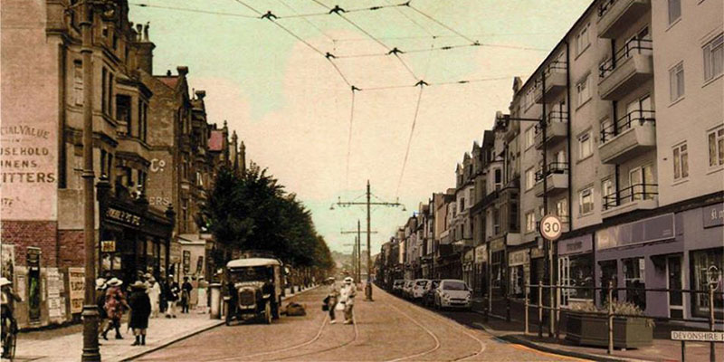

Introduction
Bexhill-on-Sea stands on rising-ground 67 miles from London. It is an ancient town home to a number of historic sites, Edwardian and Victorian architecture, and one of the first Art Deco buildings - the De La Warr Pavilion.
Since 1989 the town has been twinned with Merris, France.
 The name Bexhill was originally Bixlea from the 8th century, then followed by the Doomsday Book's Bexlei meaning 'glade where box trees grow'. It is thought that a misunderstanding in language during the 13th century turned the second syllable into 'hill'.1
The name Bexhill was originally Bixlea from the 8th century, then followed by the Doomsday Book's Bexlei meaning 'glade where box trees grow'. It is thought that a misunderstanding in language during the 13th century turned the second syllable into 'hill'.1
You can see various stories behind Bexhill's street names by searching for an address or by right-clicking on the map and selecting 'Query place'.
Today Bexhill has a population of over 41,000. It prides itself on its long beaches and diverse countryside, independent traders and traditional culture. The economy set to expand with the new trunk roads and business parks being built to the north.
Click the arrow at the top of the tab to continue the tour.
